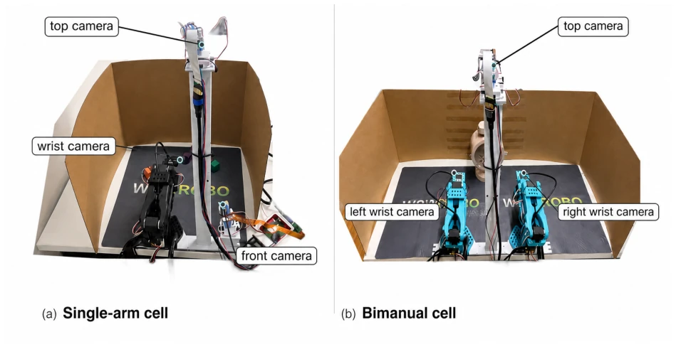
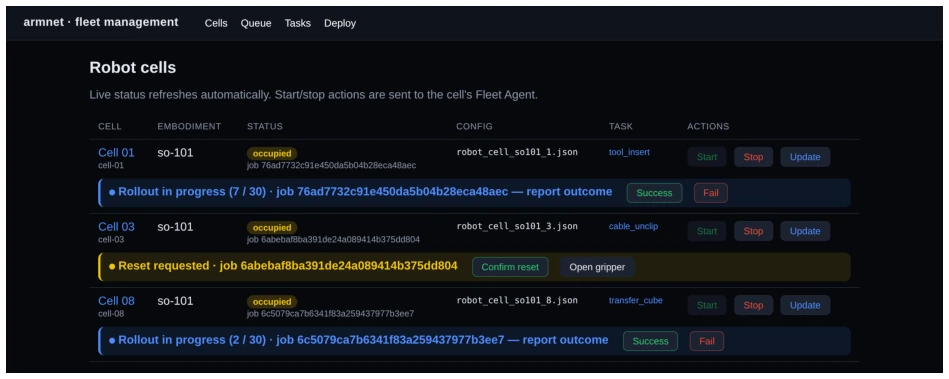
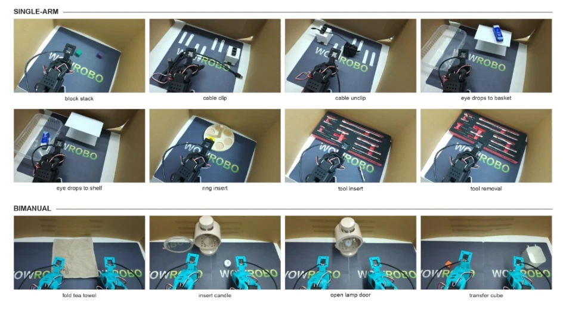

This ArmnetBench v0.1 attempts to address the pain points of embodied AI evaluation using 'cheap' and 'parallel' approaches. The SO-101 robotic arm plus cardboard boxes indeed saves money, but 'cheap' often implies 'simplistic'. Although claimed to be low-supervision, each evaluation round still requires manual scene resetting and scoring; the so-called 'automation' merely moves operations from single machines to clusters. More interestingly, it does not invent new policies but utilizes existing VLA and IL models for scoring, acting as an 'evaluation field' rather than an 'innovation field'. Although open-sourcing data is good, releasing over 3,000 labeled real-world trajectories is indeed beneficial for downstream training, but inconsistent lighting and unverified cross-robot reproducibility, these hard flaws make the term 'benchmark' slightly awkward. However, for laboratories lacking hardware resources, this is indeed a usable 'training ground'.
研究动机Motivation
真实世界评估是通用机器人策略发展的瓶颈。现有工作如 REPLAB (Yang et al., 2019) 和 RoboArena (Atreya et al., 2025) 虽提供了硬件标准或分布式框架，但往往受限于成本、单一机器人或粗粒度的二值评分。仿真基准如 Meta-World (Yu et al., 2020) 虽便宜但存在 sim-to-real 鸿沟。现有物理基准常因硬件昂贵导致任务少、试验少，且未报告的设置细节（如光照、相机位姿）阻碍复现。ArmnetBench 旨在通过低成本集群和共享预算协议，降低单次评估成本，提供可比较的、带细粒度评分的真实数据，解决评估瓶颈问题。
Real-world evaluation is a bottleneck in the development of general-purpose robot policies. Existing works such as REPLAB (Yang et al., 2019) and RoboArena (Atreya et al., 2025) provide hardware standards or distributed frameworks, but are often limited by cost, single robots, or coarse-grained binary scoring. Simulation benchmarks like Meta-World (Yu et al., 2020) are cheap but suffer from a sim-to-real gap. Existing physical benchmarks often result in few tasks and trials due to expensive hardware, and unreported setup details (such as lighting, camera poses) hinder reproducibility. ArmnetBench aims to reduce single-evaluation costs through low-cost clusters and shared budget protocols, providing comparable real-world data with fine-grained scoring to solve evaluation bottleneck problems.
The overall architecture is based on the Armnet robotic arm farm, where workstations manage containerized policies and the cloud schedules tasks. Hardware units employ SO-101 robotic arms (single or dual arm), equipped with Raspberry Pi 5 edge computing, 3 cameras, and a cardboard workspace. In the evaluation process, policies run in isolated containers, and operators monitor, reset scenes, and score via a control panel. Regarding data flow, observations include camera views and joint positions, while actions are target joints and gripper positions. Innovations lie in: 1) Low-cost hardware standardization (SO-101 + Pi + cardboard), single arm approx. $359; 2) Three-way scoring mechanism (success, suboptimal, failure), finer than traditional binary; 3) Data format compatible with LeRobot v3.0 and RoboMeter, supporting downstream reward modeling and world model training. Additionally, checkpoints for tasks and policies are released to ensure reproducibility.

Figure 1: Single-arm (left) and bimanual (right) ArmnetBench cells. Each cell uses a bounded cardboard workspace and three cameras. The single-arm cell uses top, front, and wrist views; the bimanual cell uses top, left_wrist, and right_wrist views.

Figure 2: The fleet-management control panel used for parallel evaluation. Two cells are mid- rollout, with progress and scoring controls, while the third is waiting for the operator to confirm a scene reset. Each row also shows occupancy, the active job, configuration, task, and cell lifecycle controls.
The benchmark includes 12 desktop manipulation tasks (8 single-arm + 4 dual-arm), 7 policies (ACT, Diffusion, SmolVLA, π0, π0.5, GR00T, MolmoAct 2) fine-tuned on 50 demonstrations per task. A total of 2,518 policy rollouts and 600 reference demonstrations were collected, totaling 3,118 core trajectories. Metrics are strict success rate and success + suboptimal rate. Results show π0.5 performed best (47.6% strict success rate), and in dual-arm tasks Diffusion Policy outperformed ACT. It was found that policy performance depends on robot configuration, and contact-intensive tasks (such as cable_clip) all failed. The data includes 89 suboptimal trajectories, revealing the value of fine-grained scoring.

Figure 3: The 12 ArmnetBench v0.1 tasks, shown from the top camera at the start of a human- teleoperated reference demonstration. The upper two rows show the eight single-arm tasks; the bottom row shows the four bimanual tasks.